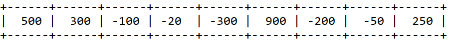
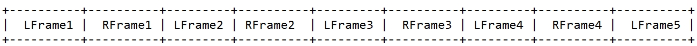

PCM音频文件#
1. What is PCM?#
PCM(Pulse-code-modulation)是模拟信号以固定的采样频率转换成数字信号后的表现形式。
Sample Rate : 采样频率单位为：Hz。采样频率越高，音频质量越好，占用空间也越大。
Sign : 音频数据是否是有符号的。通常情况下都是有符号的。若是将有符号的数据当做无符号的数据来处理将会使声音听来很刺
Sample Size : 表示每一个采样数据的大小。通常该值为16-bit。
Byte Ordering : 字节序指的是little-endian还是big-endian。表示音频数据的存储字节序。通常均为little-endian。
Number of Channels : 标识音频是单声道(mono，1 channel)还是立体声(stereo，2 channels)。
通过以上五个数据我们就可以描述一个PCM数据，播放一个PCM数据需要的就是以上五个数据。
2. What does a PCM stream look like?#
单声道：

每个整数占据2个字节(16-bit)，9个采样也就是18字节的数据。每个采样的整数大小最小为 -32768，最大为 32768 。根据采样数据的位置和值画一个图的话，就会得到像播放器上那样的波浪形图。
我们可以像下面伪代码示例这样将数据读入一个C语言数组 :
FILE *pcmfile
int16_t *pcmdata;
pcmfile = fopen(your pcm data file);
pcmdata = malloc(size of the file);
fread(pcmdata, sizeof(int16_t), size of file / sizeof(int16_t), pcmfile);
如果我们将这些数据送入声卡，我们就可以听到声音。当然我们需要告诉声卡这些数据的采样率。若我们告知声卡的采样率大于数据本身的采样率，那么这些数据的播放速度会高于其原始的速度。就是快放的功能。
立体声：

每一个frame是一个16-bit的采样点。左右声道的数据交叉存放。